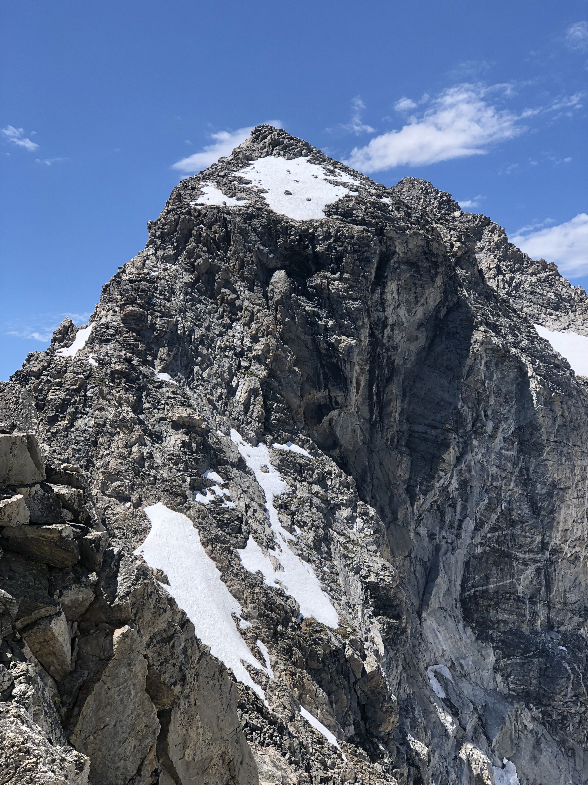
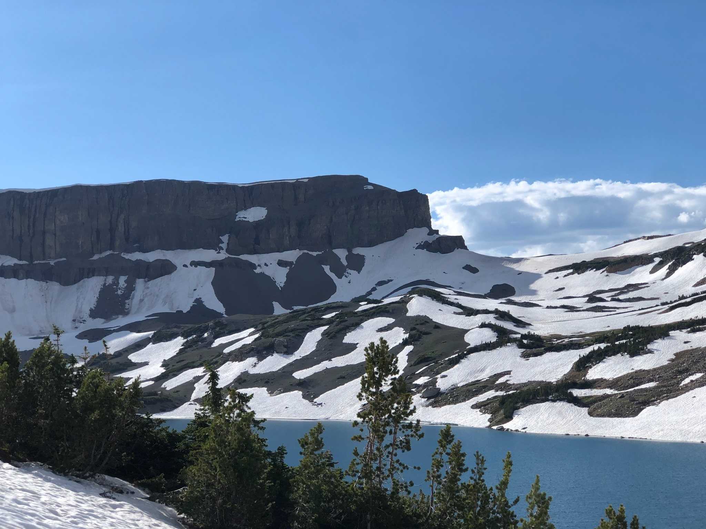
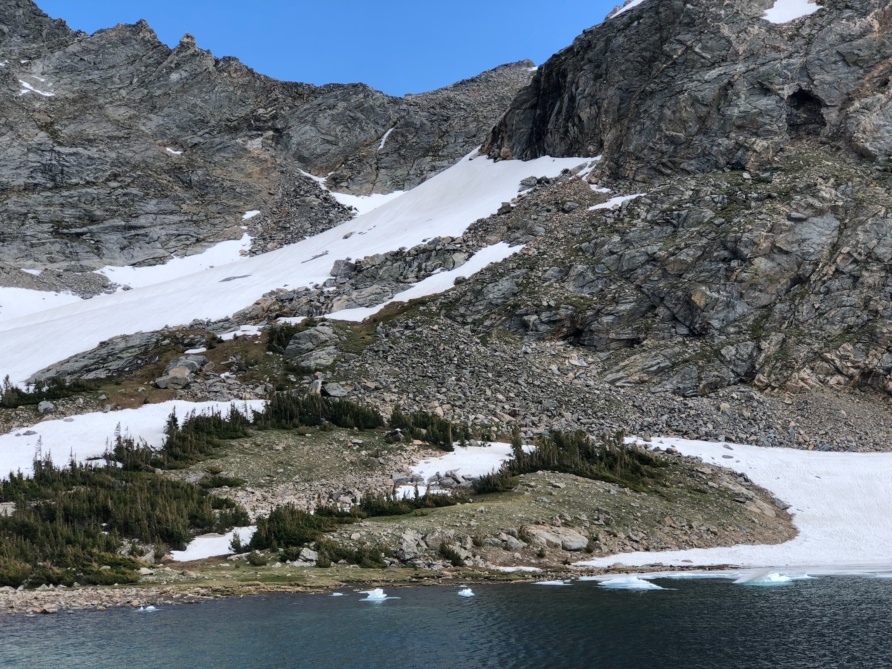
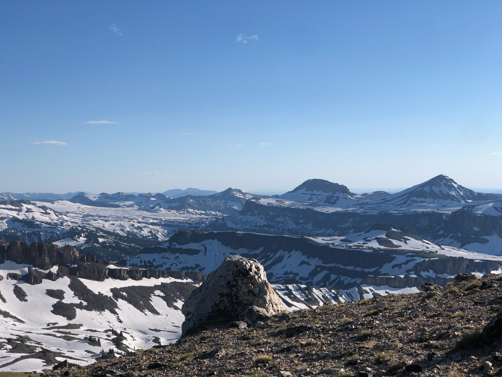
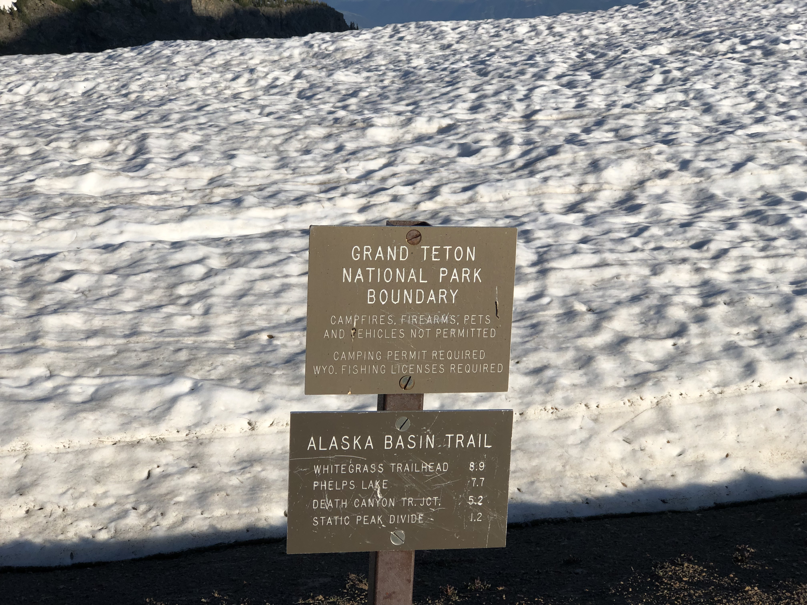
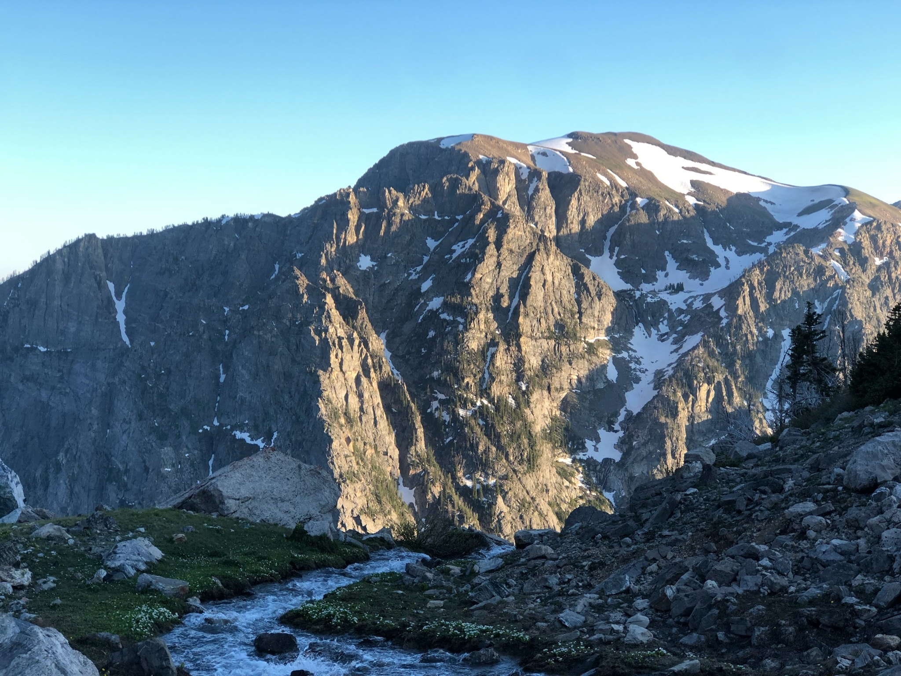

Champagne got me loopy
6/29/2024
I drew up a plan for this trip on a map on the dinner table at 233 Pine Marten. The original idea was too ambitious, since I was trying to impress Gary, who was hanging around the kitchen. I was hoping for a sweep through the southern Tetons that would hit Nez Perce, Cloudveil Dome, the South (mostly to cross into Avalanche Canyon), Veiled Peak, and then Buck Mtn. A couple of earlier season days had been turned around by excessive snow/ice – now a few days from July, and proper climbing season, I was anxious to finally have a big day out. I set off a little after 6 am on the 29th.
I had failed to make it up Nez Perce my last time there, so I was pretty set on tagging it the second time around. The rime and snow had vacated most of the NW couloir systems, and making it to the major bench at ~11k feet was simple. The final 900 feet was not. After getting lost a few times near the summit, I was disappointed it was already 11 am when I topped out.

More interested in the traverse of the South Teton that could link Garnet and Avalanche canyons, I skipped adding Cloudveil Dome and drove straight to the Garnet south fork saddle. My third time up the South was typically uneventful. Descending via the south side, though, was awful. I wound up in this section of horrifically unstable red-stained rock, and took several sharp falls. My hands got pretty cut up but I avoided real injury. I would not try again. Sadly info from friends indicates that the west side of the South is just as bad? A shame if there is no simple way to hop between the back ends of Garnet and Avalanche.
My reward after the descent was the stunning Snowdrift Lake. I’d been up Avalanche a month and a half ago to climb Wister, but hadn’t seen any of the upper canyon above Taminah, and in the mid-afternoon light the bowl around Snowdrift was a brilliant scene. To be there felt satisfyingly remote, which isn’t always the case with the premier sights of the Tetons.


After circling the eastern edge of Snowdrift I realized Veiled Peak was only a short distance more to ascend. Given how long Nez Perce and the descent off of the South had taken, I had been on the fence about taking the time to tag one of the more minor peaks of the range, but a brief hike up a snowfield and another short scramble put me on top of Veiled at around 6:30 pm.
From Snowdrift I could see that getting off Veiled from its western ridge did not look totally easy. That was indeed the case. I had to make some uncomfortable moves on pretty poor rock to get onto the large plateau that buttresses the eastern edge of Alaska basin. Given the time, it was now apparent Buck was out of the cards, and also that I was in a poor position generally to make it back home at a reasonable hour. The most direct way would likely have been to go right back down Avalanche Canyon, since I’d then link up with the Taggart trail and have only two or three more miles to go. However, my previous experience of Avalanche was quite negative. I decided instead to add a few more miles on trail and headed to the Death Canyon trail system.


I did not have a headlamp with me. I was very conscious of this and started to try and run the stretch between the plateau and the Albright trail, which spanned one or two miles of slushy, hilly snow in upper Alaska Basin. I reached what could be considered the upper northern bound of Death Canyon around 8:30 pm, and after bushwacking vertically downward for a few more hundred feet made it to the trail. A relief! I slowed to a less frantic hike for maybe a mile or two, and then pushed it to a jog as I wound down to Phelps Lake. At the Valley Trail junction, six miles from home, 22 behind me, I was finally out of natural light.


If I had more phone battery, and could use it as a light, that final stretch may not have felt as unending as it did. But I didn’t, so this was my navigation method: since the Valley Trail is so straight, and flat, checking the gaps in the silhouettes of the treetops against the sky could determine fairly consistently where the trail was, and I proceeded by heading toward those gaps and stepping lightly. A bright and starry night sky helped, both with giving the trees starker outlines and providing a sense of the ground geometry. I ultimately rolled into Beaver Creek just before midnight, as exhausted as probably I’ve ever been after a day in the Tetons.
Stats from Strava: 28 miles, 13k elevation gain.